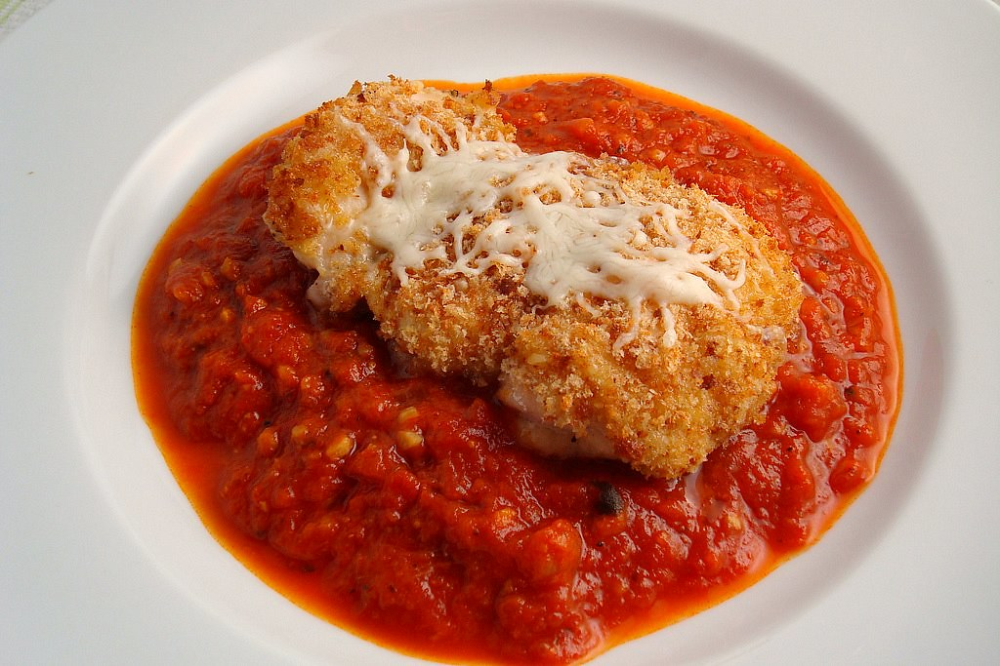

Chicken Parmesan
A simple chicken parmesan recipe that uses less sauce and a crispier crust

Ingredients
- chicken breast halves
- salt and freshly ground pepper to taste
- 2 Large Eggs
- Panko bread crumbs
- Grated Parmesan cheese
- all purpose flour
- Tomato Sauce
- Fresh Mozarella
- Basil
- Provalone cheese
- Olive Oil
Steps to make Chicken Parmesan
- Preheat an oven to 450 degrees F
- Place chicken breasts between two sheets of heavy palstic on a solid, level surface. Firmly pound chicken with the smooth side of a meat mallet to a thickness of 1/2-inch.
- Season chicken thoroughly with salt and pepper. Using a sifter or strainger;sprinkle flour over chicken breasts, evenly coating both sides
- Beat eggs in a shallow bowl and set aside.
- Mix bread crumbs and 1/2 cup Parmesan cheese in a separate bowl, set aside.
- Dip a flour-coated chicken breast in beaten egggs. Transfer breast to the bread crumb mixture, pressing crumbs into both sides. Repeat for each breast. Let chicken rest for 10 to 15 minutes.
- Heat 1/2 cup olive oil in a large skillet on a medium-high heat until it begins to simmer. Cook chicken in the hot oil intul golden on each side. The chicken will finsih cooking in the oven.
- Trasnfer chicken to a baking dish. Top each breast with tomato sauce, cheese, and basil.
- Bake in preheated oven untiul cheese is browned and bubbly and chicken breasts are no longer pink in the center.
Go Back